FamiDuke
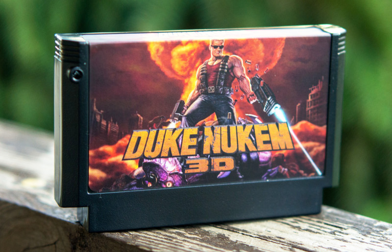
Ще одна шедевральна гра 90х повністю перенесена на 8бітний формат.
Щоб вас побалувати "новинкою" прийшлось провести дуже багато роботи. Прийшлось перемалювати багато екранів, шрифтів, додати стискання зображення, пережати оригінальні звукові доріжки. Але не хвилюйтесь жодної "чікі" не вирізанно. Все так само - бий чужинців, рятуй чік.
Багато було перенесено із мого порта Думу, але вдалося досягти більшої позначки FPS.
Версія гри - Duke Nukem 3D Atomic Edition, повна на 4 епізоди.
Велика подяка Felixx Channel у тестуванні та підтримці.
Як воно працює?
Так само як і Дум порт, у картриджі стоїть мікропроцесор ESP32S3, який замінює собою відео пам'ять та CIRAM. Та динамічно генерує відео кадр - CHR та Nametable.
У PGM пам'яті розташовується програма, яка синхронізує ESP32S3, зчитує керування та передає на мікроконтролер. Крім того додана можливість змінювати палітру.
Дані гри зберігаються у вбудованій пам'яті ESP32S3.
Треба мати на увазі, що відключення музики додасть приблизно 10FPS, також опції "Noise" та "Blink" впливають на FPS.
Технічні характеристики:
Розмір екрану - 256х224
FPS - 30-60
Кількість кольорів - 10
Audio - mono 24Khz
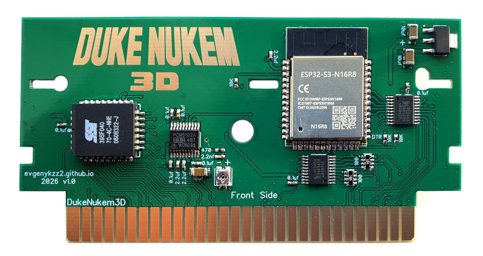
Налаштування зображення
Я додав спеціальні пункти меню у відео сетінгах.
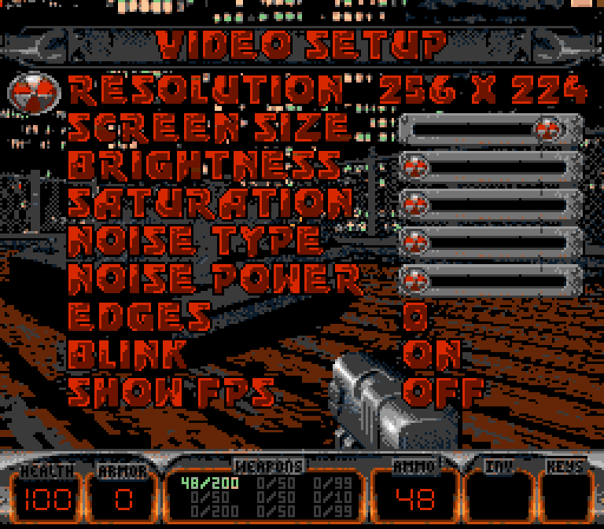
Brightness - яскравість.
Saturation - насиченість.
Noise type - тип шуму. Шум дозволяє імітувати напівтони. 4 варінти - без шуму, BlueNoise, Vertical та BayerNoise.
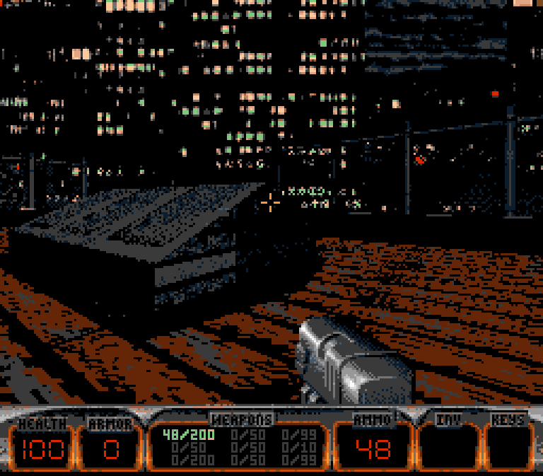
Noise power- потужність шуму.
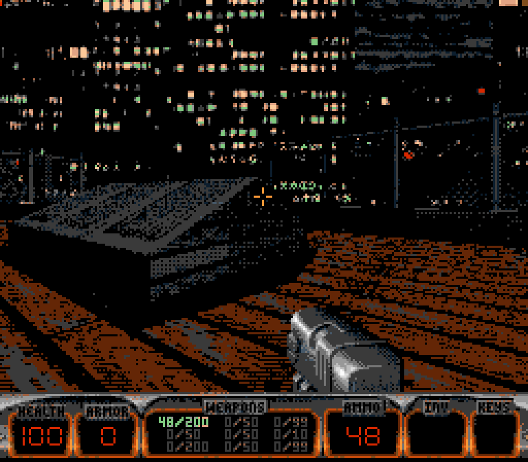
Edges - відображення граней.
Blink - режим "мигання" коли із 2х зображень мозок бачить усереднене зображення.
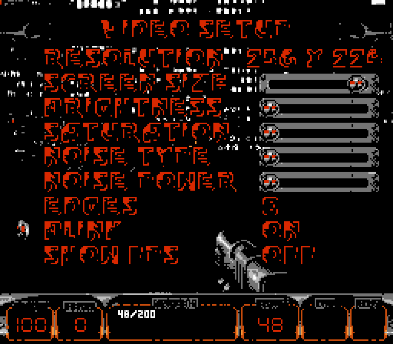
Музика та звуки
Музика в грі - MIDI, звуки не зжаті .wav низької дискретизації.
Вдалося до біса сильно оптимізувати OPL3, але частота дискретизації занижена вдвічі і складає 24Кгц.
Звук конвертується на зовнішньому чіпу PCM5102A, також на платі є потенціометр для налаштування гучності. За замовчуванням він налаштований на максимум, і поки ніхто не скаржився, тому нема сенсу його вертіти.
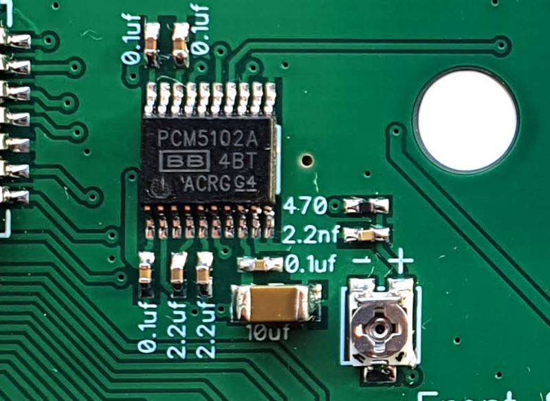
Як керувати
Щоб відкрити вбудовану підказку - виберіть у меню "HELP".
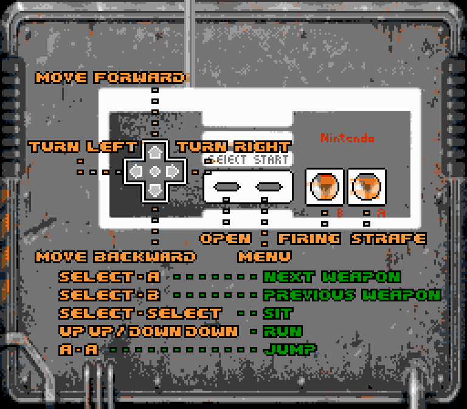
Хрестовина - ходити та крутитися.
Select - відкрити.
Start - меню.
В - постріл.
А - режим приставного кроку, якщо затиснути - то по натисканню "Ліворуч" та "Праворуч" гравець не буде кружляти, а рухатись.
Select+A - наступне озброєння.
Select+B - попереднє озброєння.
Двічі вперед/Двічі назад - біг.
Двічі селект - присісти.
Двічі А - стрибок.
У додатковому меню Controls можна обрати чутливість, та обрати заміну кнопок якщо пальці ростуть не з того місця.
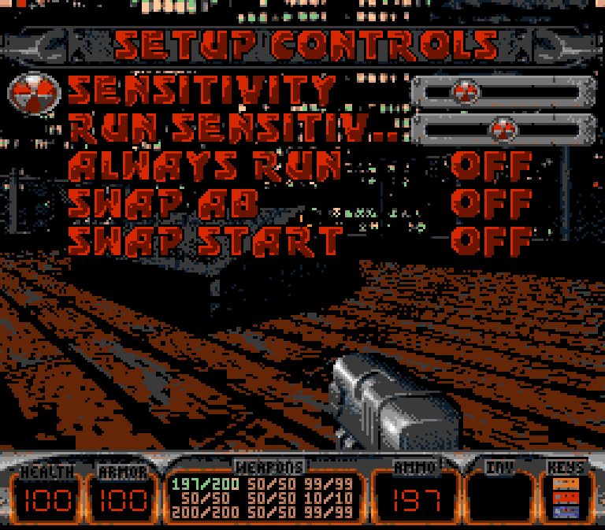
А тепер до ексклюзивного меню - інвентарю. Якщо натиснути старт в процесі гри - то відкриється спеціальне меню.
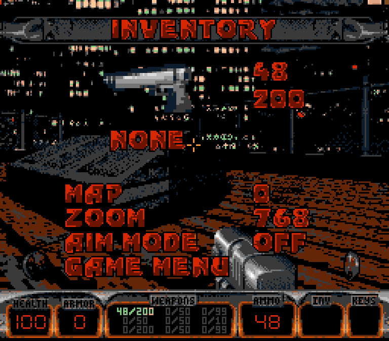
1 - вибір зброї. Після закриття меню зброя зміниться.
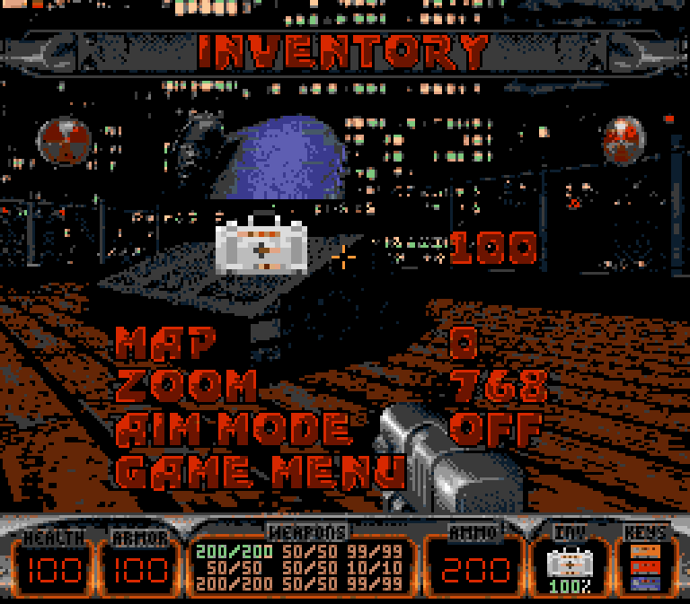
2 - вибір предмету. На кнопку B можна використати предмет.
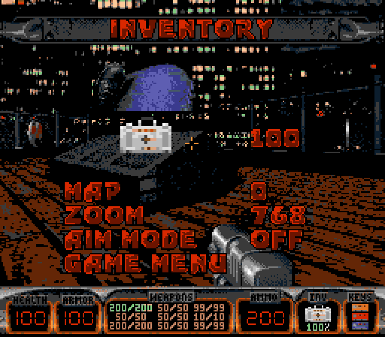
3 - мапа.
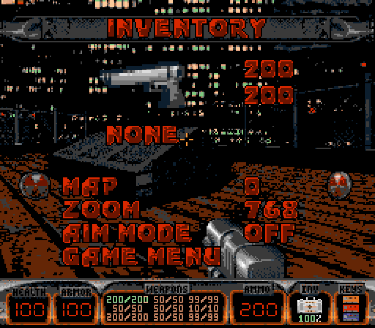
4 - масштаб мапи.
5 - режим прицілювання. Після закриття меню (натиснути Старт) кнопкою вверх/вниз можна буде піднімати/опускати приціл. Щоб вийти із режиму прицілювання достатньо один раз натиснути Старт, при цьому меню не відкриється.
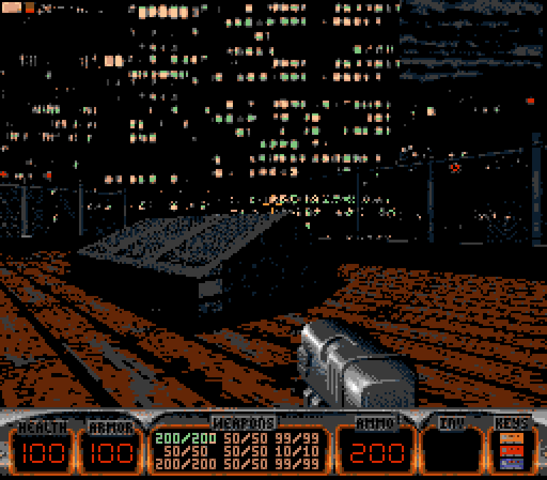
Підтримка консолей
Я тестував на багатьох Денді клонах, на Famicom, AvFamicom, Nes, NesPal. На усіх працює.
На деяких Lifa немає звуку, так само якщо грати через перехідник на NES - не буде звуку.
На деяких телевізорах верхні 8 рядків зображення не відображаються. Для цього я додав опцію в меню - "Message offset": якщо увімкнути, усі сповіщення будуть зсунуті вниз на 8 пікселів.
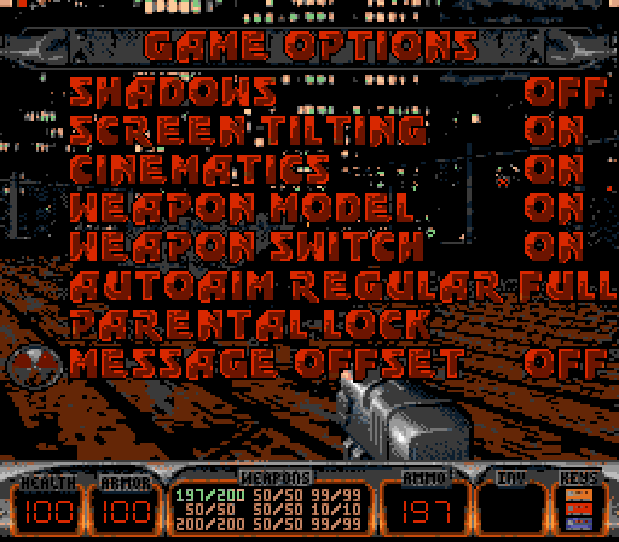
Збереження
Так, збереження працюють як на оригіналі. Для прискорення збереження екран гасне на секунду.
Збереження записуються на внутрішню флеш пам'ять, так-що можна продовжити грати у будь який час.
Ввести назву збереження не можливо. Формат імені: Епізод-Рівень (Сумарний час гри).
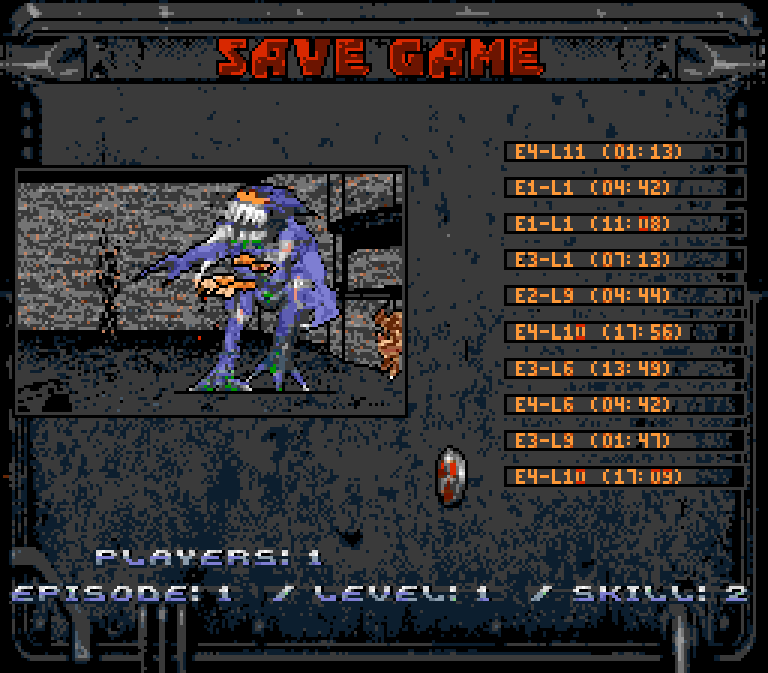
Варіанти корпусів
Можете обрати один із 4 корпусів
1 - Чорний Конамі:
2 - Чорний Фаміком:
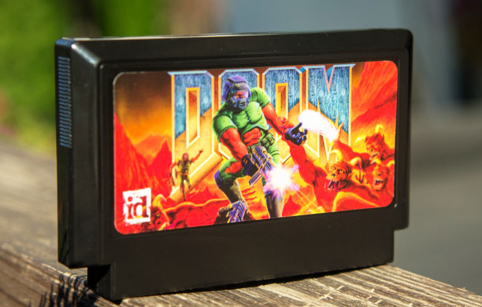
3 - Жовтий стіплер:
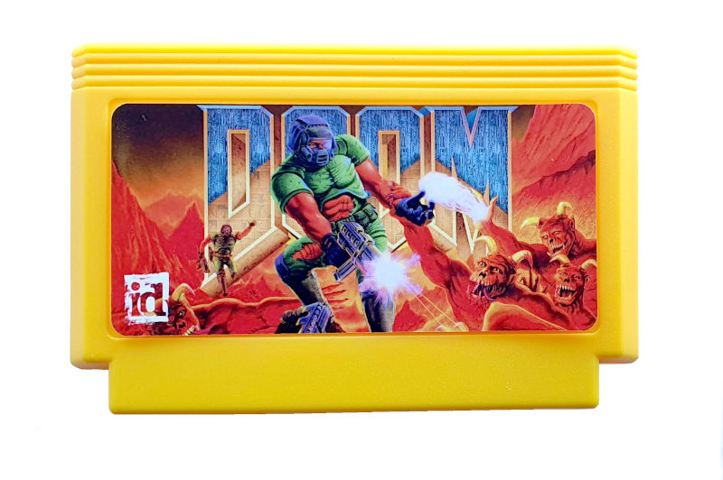
4 - Жовтий ТвГейм:
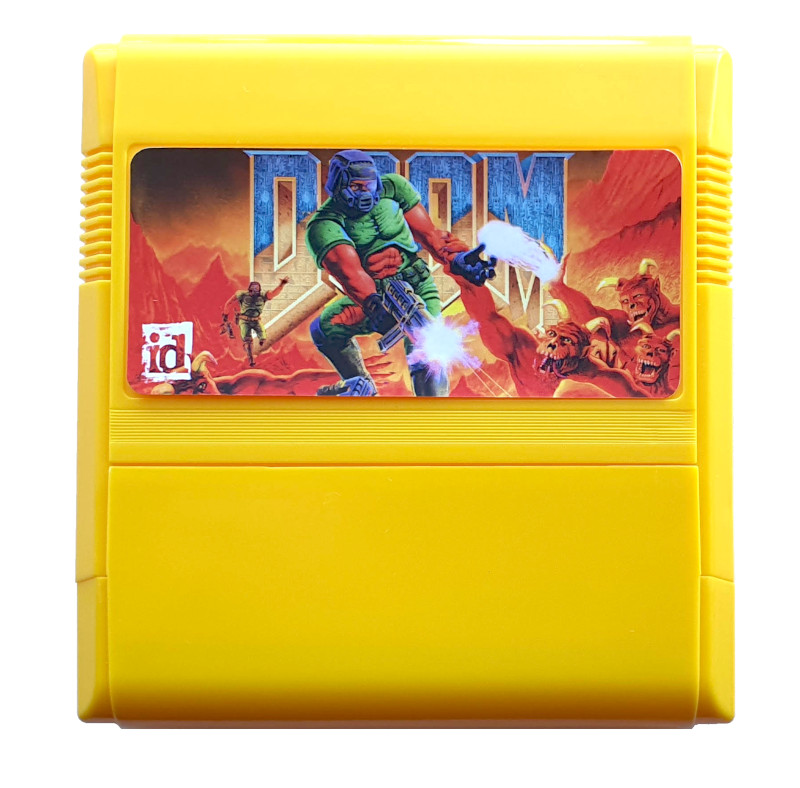
DNSTUFF?
Так
↑↑↓↓←→←→AB: додає усю зброю та ключи;
↑↑↓↓←→←→BA: режим бога;
↑↑↓↓→←→←BA: завершує рівень.
Як придбати
Зв'язатися зі мною можна по Viber, Telegram, Телефон +380992028599 Кузнєцов Євген
Відправлення: Нова Пошта/Укрпошта.